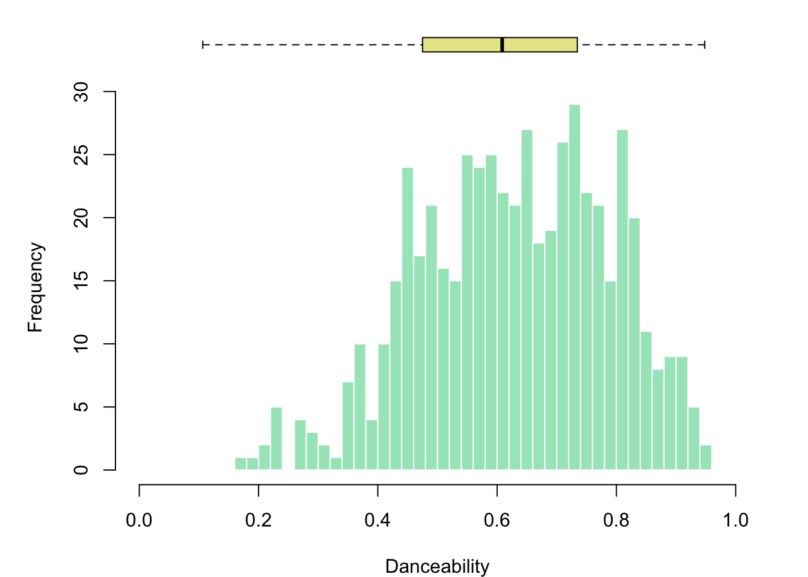
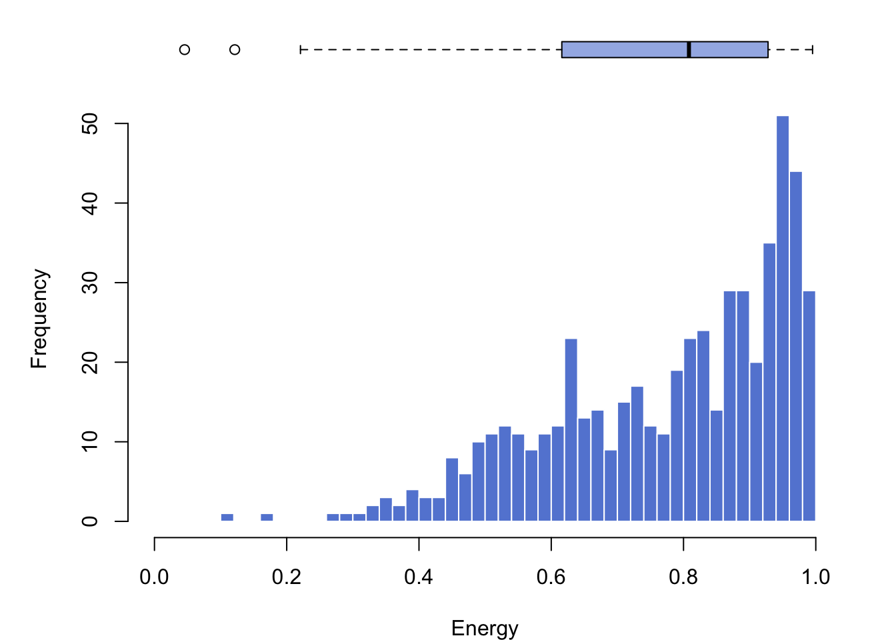
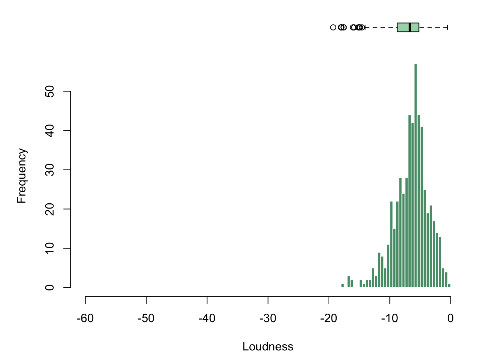
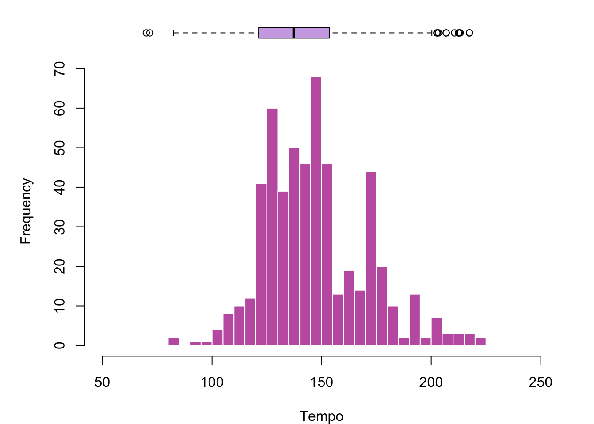
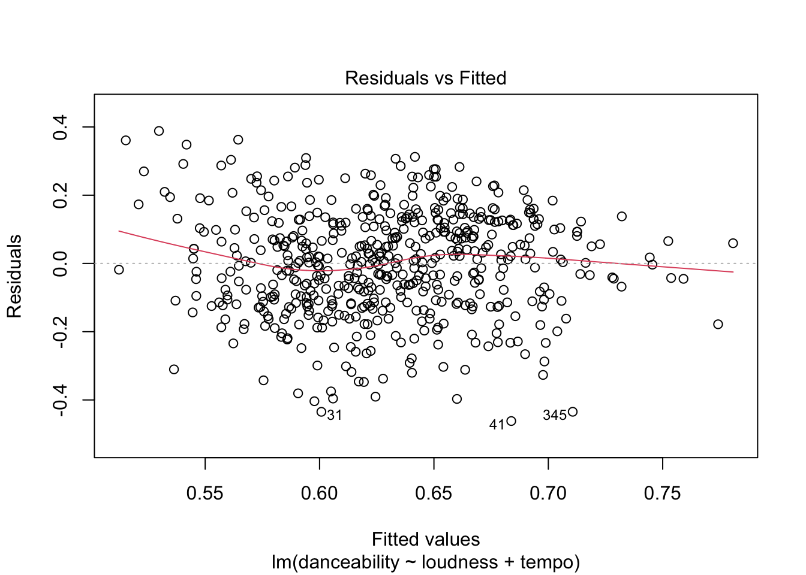
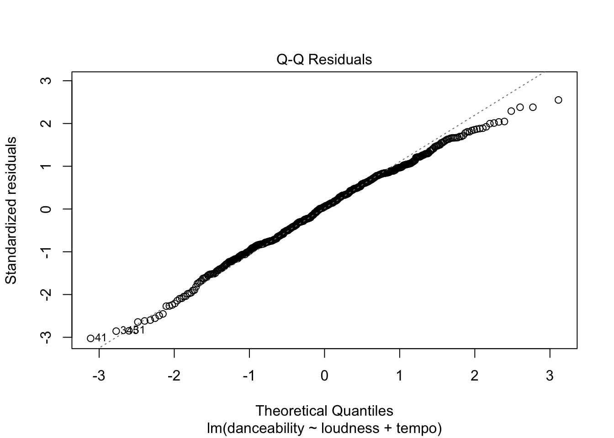
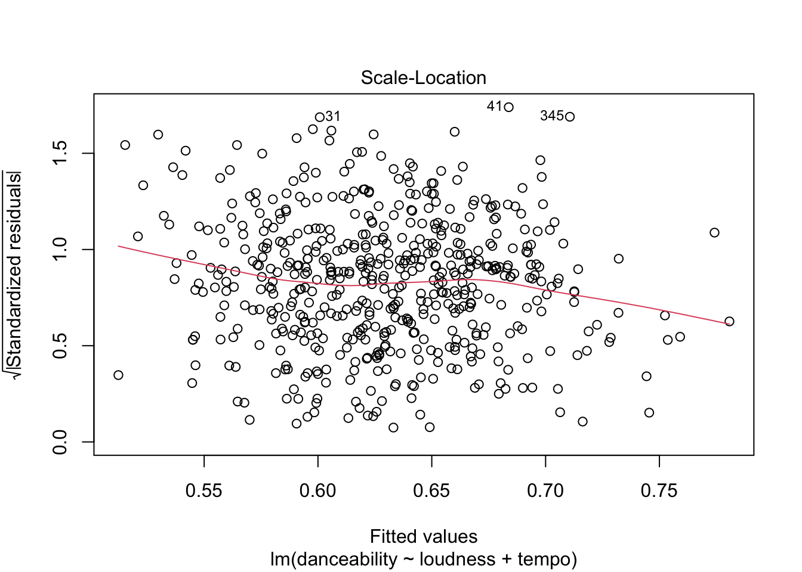
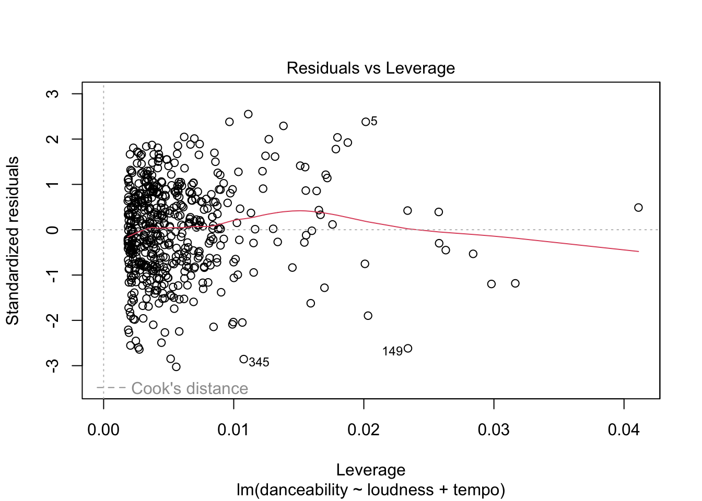
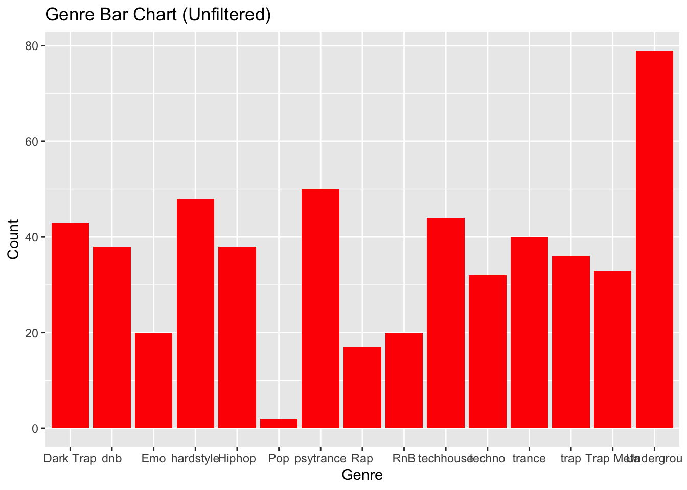
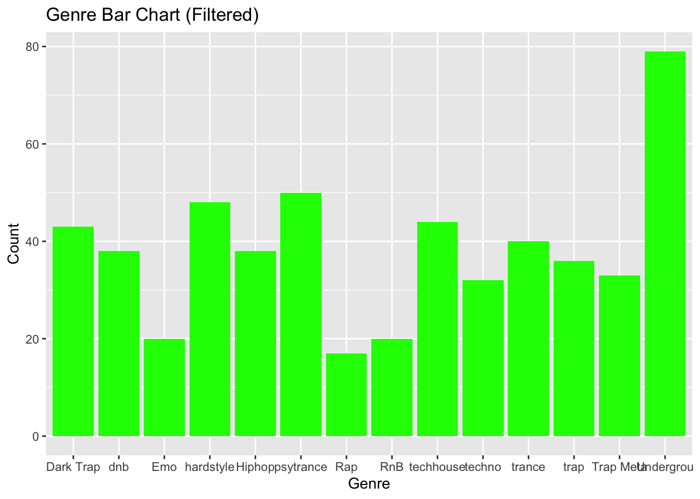

library(readxl)
library(dplyr)
library(car)
library(ggplot2)
sp <- read_excel("Data/spotify_stat3120.xls")Spotify Descriptive Statistics
Setup
Descriptive Statistics
Danceability
dance_var <- sp$danceability
summary(sp$danceability) Min. 1st Qu. Median Mean 3rd Qu. Max.
0.166 0.511 0.636 0.629 0.754 0.954 sd(sp$danceability)[1] 0.1594543Energy
energy_var <- sp$energy
summary(sp$energy) Min. 1st Qu. Median Mean 3rd Qu. Max.
0.1090 0.6430 0.8230 0.7782 0.9350 0.9980 sd(sp$energy)[1] 0.177742Loudness
clean_sp <- filter(sp, loudness < 0)
clean_loud <- clean_sp$loudness
summary(clean_loud) Min. 1st Qu. Median Mean 3rd Qu. Max.
-17.912 -8.063 -6.126 -6.471 -4.737 -0.344 sd(clean_loud)[1] 2.857596var(clean_loud)[1] 8.165856Tempo
tempo_var <- sp$tempo
summary(sp$tempo) Min. 1st Qu. Median Mean 3rd Qu. Max.
81.99 129.98 145.00 147.22 160.18 220.04 sd(sp$tempo)[1] 23.24385Plots
Danceability
layout(mat = matrix(c(1,2),2,1, byrow=TRUE), height = c(1,8))
par(mar=c(0, 3.1, 1.1, 2.1))
boxplot(dance_var, horizontal=TRUE, ylim=c(0,1), xaxt="n",
col=rgb(0.8,0.8,0,0.5), frame=F)
par(mar=c(4, 5, 1.1, 2.1))
hist(dance_var, breaks=40, col=rgb(0.2,0.8,0.5,0.5), border=F,
main="", xlab="Danceability", ylab="Frequency", xlim=c(0,1))
Energy
layout(mat = matrix(c(1,2),2,1, byrow=TRUE), height = c(1,8))
par(mar=c(0, 3.1, 1.1, 2.1))
boxplot(energy_var, horizontal=TRUE, ylim=c(0,1), xaxt="n",
col=rgb(0.2, 0.4, 0.8, 0.5), frame=F)
par(mar=c(4, 5, 1.1, 2.1))
hist(energy_var, breaks=40, col=rgb(0.2, 0.4, 0.8, 0.8), border=F,
main="", xlab="Energy", ylab="Frequency", xlim=c(0,1))
Loudness
layout(mat = matrix(c(1,2),2,1, byrow=TRUE), height = c(1,8))
par(mar=c(0, 3.1, 1.1, 2.1))
boxplot(clean_loud, horizontal=TRUE, ylim=c(-60,0), xaxt="n",
col=rgb(0.2, 0.7, 0.4, 0.5), frame=F)
par(mar=c(4, 5, 1.1, 2.1))
hist(clean_loud, breaks=40, col=rgb(0.1, 0.5, 0.3, 0.8), border=F,
main="", xlab="Loudness", ylab="Frequency", xlim=c(-60,0))
Tempo
layout(mat = matrix(c(1,2),2,1, byrow=TRUE), height = c(1,8))
par(mar=c(0, 3.1, 1.1, 2.1))
boxplot(tempo_var, horizontal=TRUE, ylim=c(50,250), xaxt="n",
col=rgb(0.6, 0.3, 0.8, 0.5), frame=F)
par(mar=c(4, 5, 1.1, 2.1))
hist(tempo_var, breaks=40, col=rgb(0.7, 0.2, 0.6, 0.8), border=F,
main="", xlab="Tempo", ylab="Frequency", xlim=c(50,250))
Multiple Linear Regression (predict danceability)
lm_fit <- lm(danceability ~ loudness + tempo, data = clean_sp)
summary(lm_fit)
Call:
lm(formula = danceability ~ loudness + tempo, data = clean_sp)
Residuals:
Min 1Q Median 3Q Max
-0.4618 -0.1092 0.0078 0.1148 0.3882
Coefficients:
Estimate Std. Error t value Pr(>|t|)
(Intercept) 0.7546343 0.0477475 15.805 < 2e-16 ***
loudness -0.0104633 0.0023392 -4.473 9.41e-06 ***
tempo -0.0013111 0.0002879 -4.554 6.53e-06 ***
---
Signif. codes: 0 '***' 0.001 '**' 0.01 '*' 0.05 '.' 0.1 ' ' 1
Residual standard error: 0.153 on 537 degrees of freedom
Multiple R-squared: 0.08336, Adjusted R-squared: 0.07994
F-statistic: 24.42 on 2 and 537 DF, p-value: 7.089e-11Diagnostics
# Residuals vs Fitted
plot(lm_fit, which = 1)
# Q-Q plot of residuals
plot(lm_fit, which = 2)
# Scale-Location
plot(lm_fit, which = 3)
# Residuals vs Leverage
plot(lm_fit, which = 5)
# Variance Inflation Factor (multicollinearity)
vif(lm_fit)loudness tempo
1.02822 1.02822 # Independence of residuals
durbinWatsonTest(lm_fit) lag Autocorrelation D-W Statistic p-value
1 0.3796188 1.239978 0
Alternative hypothesis: rho != 0# Normality test on residuals
shapiro.test(residuals(lm_fit))
Shapiro-Wilk normality test
data: residuals(lm_fit)
W = 0.99366, p-value = 0.02307Chi-Square Test of Independence (genre vs danceability)
chi_sp <- filter(clean_sp, genre != "Pop")
dance_cat <- ifelse(chi_sp$danceability > median(chi_sp$danceability),
"Danceable", "Not Danceable")
# Observed counts
obs_tbl <- table(dance_cat, chi_sp$genre)
obs_tbl
dance_cat Dark Trap dnb Emo hardstyle Hiphop psytrance Rap RnB techhouse
Danceable 20 7 1 2 20 21 15 7 40
Not Danceable 23 31 19 46 18 29 2 13 4
dance_cat techno trance trap Trap Meta Undergrou
Danceable 27 9 11 20 69
Not Danceable 5 31 25 13 10# Expected counts
chi_res <- chisq.test(obs_tbl)
chi_res$expected
dance_cat Dark Trap dnb Emo hardstyle Hiphop psytrance Rap RnB techhouse
Danceable 21.5 19 10 24 19 25 8.5 10 22
Not Danceable 21.5 19 10 24 19 25 8.5 10 22
dance_cat techno trance trap Trap Meta Undergrou
Danceable 16 20 18 16.5 39.5
Not Danceable 16 20 18 16.5 39.5# Genre bar charts (unfiltered vs filtered)
ggplot(clean_sp, aes(x = genre)) +
geom_bar(fill = "red") +
ggtitle("Genre Bar Chart (Unfiltered)") +
xlab("Genre") + ylab("Count")
ggplot(chi_sp, aes(x = genre)) +
geom_bar(fill = "green") +
ggtitle("Genre Bar Chart (Filtered)") +
xlab("Genre") + ylab("Count")
# Chi-square test
chi_res
Pearson's Chi-squared test
data: obs_tbl
X-squared = 192.7, df = 13, p-value < 2.2e-16